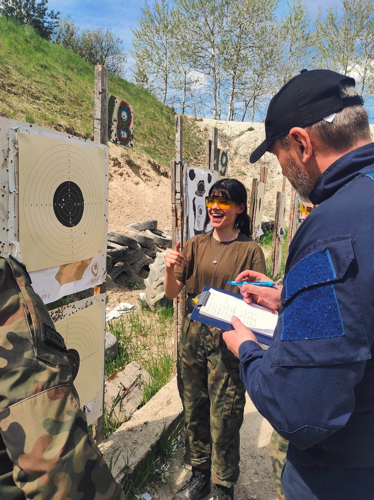
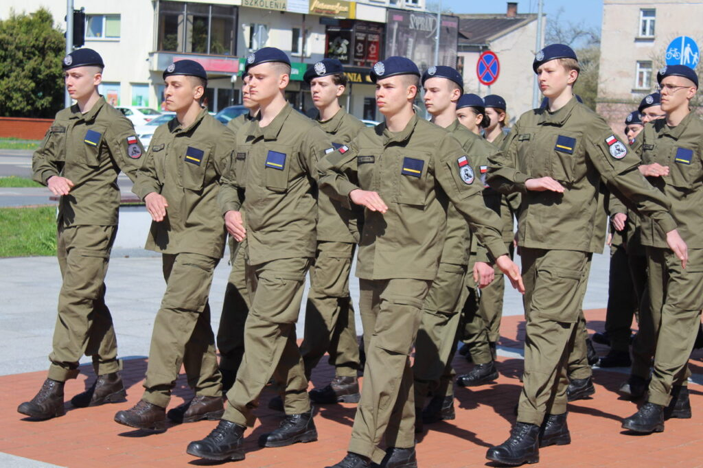
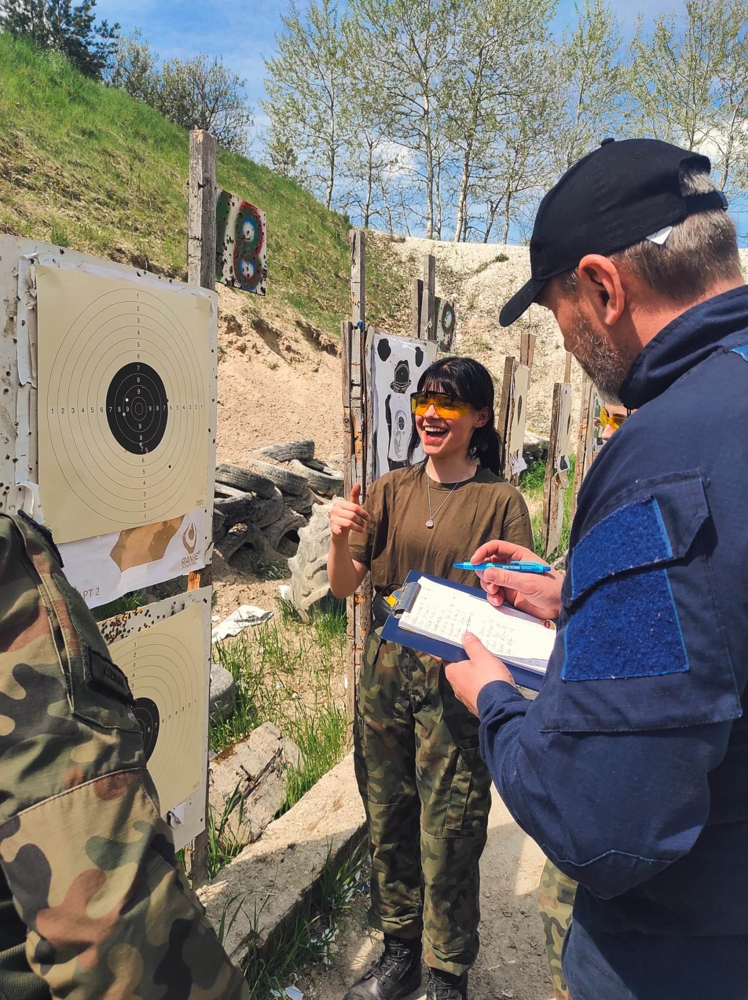
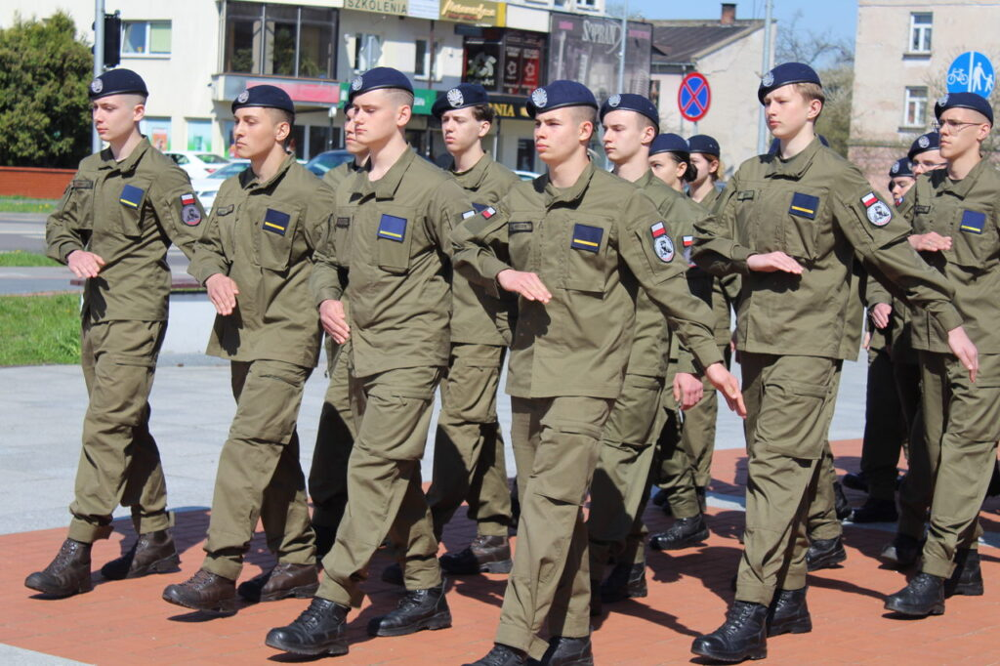
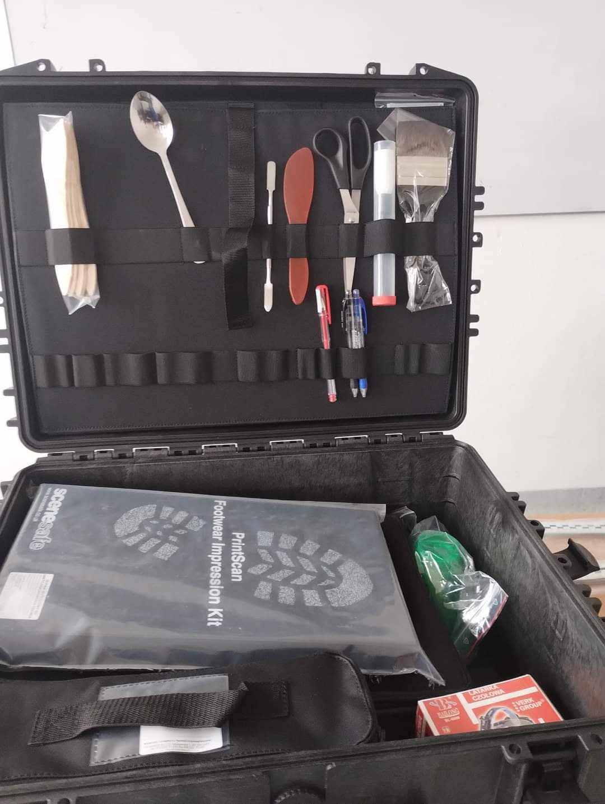
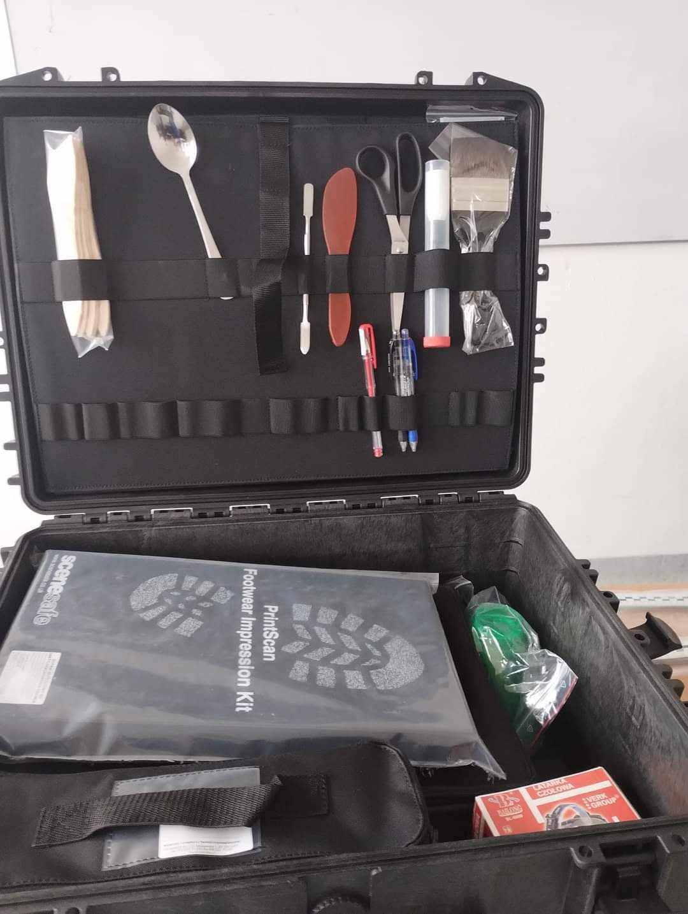

MUNDURÓWKA
Liceum Ogólnokształcące Centrum Szkół Mundurowych Zamość im. Powstania Zamojskiego to niepubliczne, 4- letnie liceum ogólnokształcące kończące się egzaminem maturalnym. Szkoła prowadzi kształcenie w klasach certyfikowanych:
- Oddział Przygotowania Wojskowego
- Oddział o profilu mundurowym (policja, straż graniczna)
Oddział Przygotowania Wojskowego objęty jest patronatem Ministerstwa Obrony Narodowej od 2017 roku. Daje to uczniom możliwość odbycia skróconej służby przygotowawczej i złożenia przysięgi. Atutem są dodatkowe punkty w procesie rekrutacji do wszystkich służb oraz na uczelnie wojskowe.
Oddział o profilu mundurowym objęty jest patronatem Ministerstwa Spraw Wewnętrznych i Administracji od 2025 roku. Gwarantuje preferencyjne warunki do służb mundurowych- Policja i Straż Graniczna. Jest to klasa ściśle współpracująca z Komendą Miejską Policji w Zamościu oraz Nadbużańskim Oddziałem Straży Granicznej w Chełmie.
 

Szkoła ma bogate zaplecze dydaktyczne m.in.:
- Pałki typu tonfa oraz teleskopowe, kajdanki – wykorzystywane przy omawianiu środków przymusu bezpośredniego oraz do celów szkoleniowych.
- Sprzęt wykorzystywany przez pododdziały zwarte w służbach mundurowych tj. kaski wraz z ochroną twarzy, kamizelki przeciwuderzeniowe, ochraniacze kończyn dolnych, tarcze z tworzywa sztucznego typu „plexa”.
- Walizka kryminalistyczna oraz mini zestawy do zabezpieczania śladów daktyloskopijnych przy pomocy folii daktyloskopijnej oraz do ujawniania takich śladów przy pomocy argentoratu, sadzy angielskiej, proszku magnetycznego.
- Zestawy do zabezpieczania śladów traseologicznych.
- Kamizelki taktyczne czarne oraz typu moro, kabury plastikowe wraz z atrapami broni krótkiej.
- Markery do paintball wraz z strojem ochronnym oraz maskami ochronnymi twarzy.
- Strzelnica laserowa typu Smart Target wraz z replikami ASG broni długiej i krótkiej przystosowanymi do w/w strzelnicy.
- Atrapy broni długiej do celów szkoleniowych (składanie i rozkładanie).
- Repliki granatów F-1 oraz RG-42.
- Sprzęt podstawowego pakietu medycznego.
- Manekiny do wykorzystania w szkoleniu z pierwszej pomocy.

 



Każdy uczeń bierze udział w zajęciach z zakresu taktyki i technik interwencji oraz języka angielskiego w służbach mundurowych. Uczniowie rozwijają swoje umiejętności biorąc udział w zajęciach praktycznych w ramach obozów i wyjazdów szkoleniowych.
Szkoła dysponuje przestronnymi i jasnymi salami lekcyjnymi wyposażonymi w nowoczesny sprzęt multimedialny. Do dyspozycji uczniów jest również siłownia, sala do sztuk walki, a także strefa bike. Zajęcia specjalistyczne prowadzone są przez doświadczonych instruktorów, emerytowanych funkcjonariuszy Policji i Straży Granicznej. W proces dydaktyczny zaangażowani są przedstawiciele jednostek patronackich, którzy prowadzą szkolenia na terenie szkoły.
W budynku znajdują się wyznaczone strefy relaksu wyposażone w pufy oraz siedziska. Na korytarzach znajdują się również indywidualne szafki szkolne oraz automat z przekąskami i napojami.
Uczniowie mogą korzystać z dożywiania w ramach refundacji MCPR oraz GOPS.